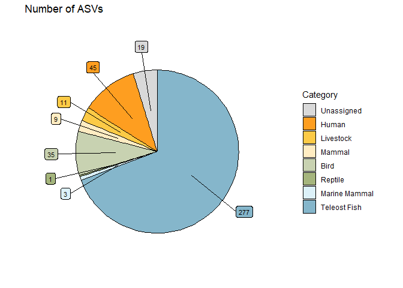
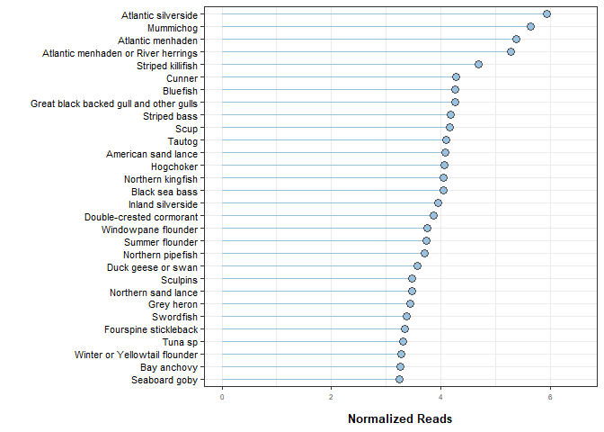
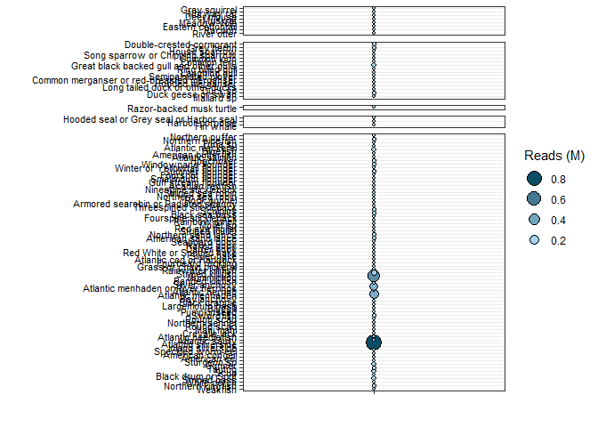
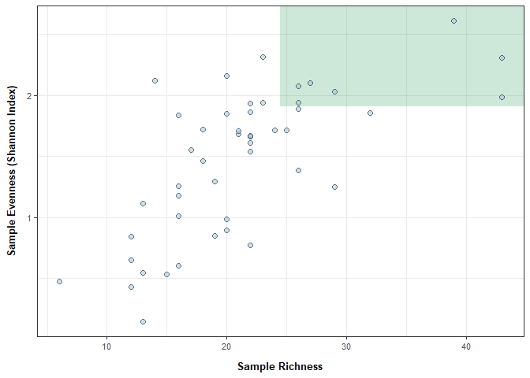

Summarizing data for report
.Rmd script
Load libraries
library(ggplot2) ## for plotting
library(tidyverse) ## for data table manipulation
## ── Attaching core tidyverse packages ──────────────────────── tidyverse 2.0.0 ──
## ✔ dplyr 1.1.4 ✔ readr 2.1.5
## ✔ forcats 1.0.1 ✔ stringr 1.6.0
## ✔ lubridate 1.9.4 ✔ tibble 3.3.0
## ✔ purrr 1.2.0 ✔ tidyr 1.3.1
## ── Conflicts ────────────────────────────────────────── tidyverse_conflicts() ──
## ✖ dplyr::filter() masks stats::filter()
## ✖ dplyr::lag() masks stats::lag()
## ℹ Use the conflicted package (<http://conflicted.r-lib.org/>) to force all conflicts to become errors
library(readxl) ## read in excel spreadsheet
library(ggh4x) ## for facet wrap options
library(writexl)
library(ggrepel)
library(cowplot)
##
## Attaching package: 'cowplot'
##
## The following object is masked from 'package:lubridate':
##
## stamp
library(scales)
##
## Attaching package: 'scales'
##
## The following object is masked from 'package:purrr':
##
## discard
##
## The following object is masked from 'package:readr':
##
## col_factor
library(phyloseq) # ecological stats
library(microbiome) # alpha diversity
##
## microbiome R package (microbiome.github.com)
##
##
##
## Copyright (C) 2011-2022 Leo Lahti,
## Sudarshan Shetty et al. <microbiome.github.io>
##
##
## Attaching package: 'microbiome'
##
## The following object is masked from 'package:scales':
##
## alpha
##
## The following object is masked from 'package:ggplot2':
##
## alpha
##
## The following object is masked from 'package:base':
##
## transform
Load data
Change the paths for your exported excel matrices.
species_breakdown <- read_xlsx("docs/eDNA 12S metab/example_output/Summary_Species_level.xlsx")
asv_breakdown <- read_xlsx("docs/eDNA 12S metab/example_output/Summary_ASV_level.xlsx")
raw_reads <- read_xlsx("docs/eDNA 12S metab/example_output/Results_matrix.xlsx") %>%
gather("sampleID", "reads", 4:last_col())
rel_ab_df <- read_xlsx("docs/eDNA 12S metab/example_output/Results_matrix_relative.xlsx") %>%
gather("sampleID", "reads", 4:last_col())
## bringing in common names information for those not in our db
commonNames_annotated <- read_xlsx("docs/eDNA 12S metab/example_output/taxonomic_assignments/CommonNames_required_edited.xlsx")
Read in gmgi db taxonomic level information and additional common names
from this project.
No user edits.
taxlevels <- read_excel(
"C:/BoxDrive/Box/Science/Fisheries/Projects/eDNA/Metabarcoding Lab Resources/Reference Databases/GMGI_Vert_Ref.xlsx") %>%
dplyr::select("Species_name", "Kingdom", "Phylum", "Class", "Order", "Family", "Genus", "species", "PhylogenySorting") %>%
distinct()
df_annotated <- raw_reads %>% left_join(., taxlevels, by = "Species_name")
# Loop through each row of the dataframe to add taxonomic level information from required edited worksheet
for (i in commonNames_annotated$Species_name) {
# Extract the current row (will do this for each ASV_ID in the choice df)
current_row <- commonNames_annotated %>% subset(Species_name==i)
# Apply filter based on the current row's condition
df_annotated <- df_annotated %>%
mutate(across(c(Common_name, Category, Kingdom, Phylum, Class, Order, Family, Genus, species),
~case_when(Species_name == current_row$Species_name ~ current_row[[cur_column()]],
TRUE ~ .x)))
}
df_tax <- df_annotated %>% dplyr::select(Species_name, Kingdom:PhylogenySorting) %>% distinct()
Defining categories and order
## Print the unique entries in the column Category
unique(rel_ab_df$Category)
## [1] "Teleost Fish" "Bird" "Marine Mammal" "Livestock"
## [5] "Human" "Mammal" "Reptile" "Unassigned"
### order these how you'd like the report to be ordered (the figures)
categories = c(
"Unassigned", "Human", "Livestock", "Mammal",
"Bird", "Reptile",
"Marine Mammal", "Teleost Fish"
)
## re-ordering all dfs based on the category list above
species_breakdown <- species_breakdown %>% dplyr::mutate(Category = factor(Category, levels = categories))
asv_breakdown <- asv_breakdown %>% dplyr::mutate(Category = factor(Category, levels = categories))
rel_ab_df <- rel_ab_df %>% dplyr::mutate(Category = factor(Category, levels = categories))
raw_reads <- raw_reads %>% dplyr::mutate(Category = factor(Category, levels = categories))
Confirm that you didn’t forget a category. If you did,
unique(rel_ab_df$Category)
## [1] Teleost Fish Bird Marine Mammal Livestock Human
## [6] Mammal Reptile Unassigned
## 8 Levels: Unassigned Human Livestock Mammal Bird Reptile ... Teleost Fish
Graph color and order options
Edit colors and/or comment/uncomment as needed based on your category list.
categories
## [1] "Unassigned" "Human" "Livestock" "Mammal"
## [5] "Bird" "Reptile" "Marine Mammal" "Teleost Fish"
fill_colors <- c(
"Unassigned" = "grey85",
"Human" = "#FE9E20",
"Livestock" = "#FCCA46",
"Mammal" = "#FFECC2",
"Bird" = "#C8D2B1",
"Reptile" = "#A5B57D",
"Marine Mammal" ="#DCF1F9",
#"Elasmobranch" = "#97ADCB",
"Teleost Fish" = "#85B6CB"
)
Calculating data for pie charts
No user edits.
### Creating a results summary df
## Group by category and calculate the total reads per category
results_summary <- raw_reads %>%
dplyr::group_by(Category) %>%
reframe(sum_reads = sum(reads))
### Creating general stats df
## calculate the percent of total reads per category / total reads of sequencing run
general_stats <- results_summary %>%
dplyr::mutate(total = sum(sum_reads),
percent = sum_reads/total*100) %>%
dplyr::select(Category, percent) %>% distinct() %>%
## round to 2 decimal places
dplyr::mutate(across(c('percent'), round, 4))
## Warning: There was 1 warning in `dplyr::mutate()`.
## ℹ In argument: `across(c("percent"), round, 4)`.
## Caused by warning:
## ! The `...` argument of `across()` is deprecated as of dplyr 1.1.0.
## Supply arguments directly to `.fns` through an anonymous function instead.
##
## # Previously
## across(a:b, mean, na.rm = TRUE)
##
## # Now
## across(a:b, \(x) mean(x, na.rm = TRUE))
### Creating ASV Summary df that will go into ASV pie chart
## Group by category and count the # of distinct(unique) ASVs per category
ASV_summary <- asv_breakdown %>%
dplyr::group_by(Category) %>%
reframe(count = n_distinct(ASV_ID))
### Creating species summary df that will go into species pie chart
## Group by category and calculate the number of distinct(unique) tax IDs per category
species_summary <- raw_reads %>%
dplyr::group_by(Category) %>%
reframe(count = n_distinct(Species_name))
Generate % reads piechart
User edits:
1. Change paths of output to desired folder (data/figures is the
suggested data structure)
### Create pie chart df that calculates 'pos' and 'csum'
## 'csum' = reverse cumulative sum of percent (sum of that row’s percent plus all rows after it)
## 'pos' = Computes a label position. this ensures the pie chart is ordered by % total
piechart <- general_stats %>%
dplyr::mutate(csum = rev(cumsum(rev(percent))),
pos = percent/2 + lead(csum, 1),
pos = if_else(is.na(pos), percent/2, pos)) %>%
dplyr::mutate_if(is.numeric, round, digits = 3)
## create pie chart
## legend is removed on this plot for the report generation; user can add it back in if desired
piechart_reads <- general_stats %>%
ggplot(., aes(x="", y = percent, fill = Category)) +
geom_col(color = "black", width=1.25) +
geom_label_repel(data = piechart,
aes(y = pos, label = paste0(percent, "%")),
size = 3, nudge_x = 1, show.legend = FALSE) +
coord_polar(theta = "y") +
scale_fill_manual(values = fill_colors) +
theme_bw() +
theme(
plot.background = element_rect(fill = "white", colour = NA),
plot.margin = margin(t = 5, r = 5, b = 5, l = 5, unit = "pt"),
legend.position = "none",
panel.border = element_blank(), # Remove panel border
panel.grid = element_blank(), # Remove grid lines
axis.ticks = element_blank(), # Remove axis ticks
axis.text = element_blank(), # Remove axis text
axis.title = element_blank() # Remove axis titles
) +
ggtitle("Raw reads (%)") +
xlab("") + ylab("") + labs(fill = "Category"); piechart_reads

ggsave("docs/eDNA 12S metab/example_output/figures/SampleReport_Category_breakdown_percent_rawreads.png", width=4, height=3)
Generate ASV pie chart
This is for internal use, not the contract report.
User edits:
1. Change paths of output to desired folder (data/figures is the
suggested data structure)
piechart_ASV <- ASV_summary %>%
dplyr::mutate(csum = rev(cumsum(rev(count))),
pos = count/2 + lead(csum, 1),
pos = if_else(is.na(pos), count/2, pos))
ASV_summary %>%
ggplot(., aes(x="", y = count, fill = Category)) +
geom_col(color = "black", width=1.25) +
geom_label_repel(data = piechart_ASV,
aes(y = pos, label = paste0(count)),
size = 3, nudge_x = 1, show.legend = FALSE) +
coord_polar(theta = "y") +
scale_fill_manual(values = fill_colors) +
theme_bw() +
theme(
plot.background = element_rect(fill = "white", colour = NA),
plot.margin = margin(t = 5, r = 5, b = 5, l = 5, unit = "pt"),
panel.border = element_blank(), # Remove panel border
panel.grid = element_blank(), # Remove grid lines
axis.ticks = element_blank(), # Remove axis ticks
axis.text = element_blank(), # Remove axis text
#legend.position = "none"
axis.title = element_blank() # Remove axis titles
) +
ggtitle("Number of ASVs") +
xlab("") + ylab("") + labs(fill = "Category")

ggsave("docs/eDNA 12S metab/example_output/figures/SampleReport_Category_breakdown_ASVs.png", width=4, height=3)
Generate the number of species pie chart
User edits:
1. Change paths of output to desired folder (data/figures is the
suggested data structure)
piechart_spp <- species_summary %>%
dplyr::mutate(csum = rev(cumsum(rev(count))),
pos = count/2 + lead(csum, 1),
pos = if_else(is.na(pos), count/2, pos))
piechart_species_plot <- species_summary %>%
ggplot(., aes(x="", y = count, fill = Category)) +
geom_col(color = "black", width=1.25) +
geom_label_repel(data = piechart_spp,
aes(y = pos, label = paste0(count)),
size = 3, nudge_x = 1, show.legend = FALSE) +
coord_polar(theta = "y") +
scale_fill_manual(values = fill_colors) +
theme_bw() +
theme(
plot.background = element_rect(fill = "white", colour = NA),
plot.margin = margin(t = 5, r = 5, b = 5, l = 5, unit = "pt"),
panel.border = element_blank(), # Remove panel border
panel.grid = element_blank(), # Remove grid lines
axis.ticks = element_blank(), # Remove axis ticks
axis.text = element_blank(), # Remove axis text
axis.title = element_blank() # Remove axis titles
) +
ggtitle("Number of Taxonomic Assignments") +
xlab("") + ylab("") + labs(fill = "Category"); piechart_species_plot

ggsave("docs/eDNA 12S metab/example_output/figures/SampleReport_Category_breakdown_Species.png", width=4, height=3)
Generate pie chart grid for contract report
- Change paths of output to desired folder (data/figures is the suggested data structure)
plot_grid(piechart_reads, piechart_species_plot,
ncol=2,
align = "vh"
)

ggsave("docs/eDNA 12S metab/example_output/figures/SampleReport_Category_breakdown.png", width=14, height=4)
Calculate and plot relative abundance by category
- Change paths of output to desired folder (data/figures is the suggested data structure)
### Calculate the reads per category per sample
raw_reads %>%
## group by sample to calculate total reads per sample
dplyr::group_by(sampleID) %>%
mutate(total = sum(reads)) %>%
## group by sample and category to generate relative abundance of that category in each sample
dplyr::group_by(sampleID, Category) %>%
reframe(group_sum = sum(reads),
group_relab = group_sum/total
) %>% distinct() %>%
### plot those values
ggplot(., aes(y=group_relab, x=Category)) +
geom_boxplot(outlier.shape = NA, aes(color=Category), fill=NA) +
geom_jitter(aes(fill=Category), width=0.2, shape=21, color='black', size = 0.75, alpha=0.35) +
scale_color_manual(values = fill_colors) +
scale_fill_manual(values = fill_colors) +
labs(color = "Category") +
scale_x_discrete(labels = scales::label_wrap(10), limits = categories) +
theme_bw() +
xlab("Category") + ylab("Relative abundance") +
theme(panel.background=element_rect(fill='white', colour='black'),
legend.position = "none",
axis.text.y = element_text(size=7, color="grey30"),
axis.text.x = element_text(size=7), # angle=45, hjust=1
axis.title.y = element_text(margin = margin(t = 0, r = 10, b = 0, l = 0), size=11, face="bold"),
axis.title.x = element_text(margin = margin(t = 10, r = 0, b = 0, l = 0), size=11, face="bold"))

ggsave("docs/eDNA 12S metab/example_output/figures/SampleReport_Categories_relative_abundance.png", width = 6.5, height = 4)
Caluclate Top 30 Species List and plot
- Change paths of output to desired folder (data/figures is the suggested data structure)
### Create dataframe that calculates the total reads per species and log10 transforms that value
top_list <- raw_reads %>%
filter(!Category == "Other" & !Category == "Livestock" & !Category == "Unassigned" & !Category == "Human") %>%
group_by(Species_name, Common_name) %>%
summarise(total = sum(reads),
log = log10(total)) %>%
arrange(desc(total)) %>%
head(30) %>% dplyr::select(-total)
## `summarise()` has grouped output by 'Species_name'. You can override using the
## `.groups` argument.
ggplot(top_list, aes(x = fct_reorder(Common_name, log), y = log)) +
geom_segment(aes(xend = Common_name, yend = 0), color = "#97C1DE") + # Lollipop stick
geom_point(size = 3, shape=21, color='grey30', fill = "#97C1DE") + # Lollipop head
coord_flip() + # Flip coordinates for horizontal lollipop chart
labs(
x = "",
y = "Normalized Reads") +
theme_bw() +
theme(axis.text.y = element_text(size = 8, color='black'), #, face="italic"
axis.text.x = element_text(size = 6),
axis.title.y = element_text(margin = margin(t = 0, r = 10, b = 0, l = 0), size=10, face="bold"),
axis.title.x = element_text(margin = margin(t = 10, r = 0, b = 0, l = 0), size=10, face="bold"),
axis.text.x.top = element_text(size = 8, color='black', face="italic", angle = 45, hjust = 0)) +
scale_y_continuous(
labels = comma,
limits = c(0, max(top_list$log) + (max(top_list$log)*0.1)) # Set the upper limit to max value + 10%
)

ggsave("docs/eDNA 12S metab/example_output/figures/SampleReport_Top_species_log.png", width=3.5, height=6)
Bubble plot
- Change paths of output to desired folder (data/figures is the suggested data structure)
raw_reads %>%
## calculate the sum of reads in the million
## add column 'xaxis' to plot everything on 1 tick mark on the x axis
dplyr::group_by(Species_name, Common_name, Category) %>%
reframe(sum = sum(reads)/1000000,
xaxis = "x") %>%
## add taxonomy information
left_join(., df_tax, by = "Species_name") %>%
## remove non-target categories
filter(!Category == "Other" & !Category == "Livestock" & !Category == "Unassigned" & !Category == "Human") %>%
# Create a factor for Common_name ordered by Order within each Category; then ordered by PhylogenySorting
dplyr::group_by(Category) %>%
mutate(Common_name = factor(Common_name, levels = unique(Common_name[order(Order, desc(PhylogenySorting))]))) %>%
ungroup() %>%
ggplot(., aes(x=xaxis, y=Common_name)) +
geom_point(aes(size=sum, fill=sum), color = 'black', shape=21) +
scale_fill_gradient(na.value = "white", low = "lightskyblue2", high = "#0C4D66") +
facet_grid2(Category ~ ., scales = "free", space = "free") +
theme_bw() +
labs(
x="",
y="",
fill = "Reads (M)",
size = "Reads (M)"
) +
theme(
axis.text.y = element_text(size = 8, color = 'black'),
axis.text.x = element_blank(),
axis.title.y = element_text(margin = margin(t = 0, r = 10, b = 0, l = 0), size=12, face="bold"),
axis.title.x = element_text(margin = margin(t = 10, r = 0, b = 0, l = 0), size=12, face="bold"),
## facet wrap labels
strip.text.x = element_text(color = "black", face = "bold", size = 12),
#strip.text.y = element_text(color = "black", face = "bold", size = 12, angle=0),
strip.text.y = element_blank(),
strip.background.y = element_blank(),
strip.clip = "off",
# Combine legends
legend.position = "right",
legend.box = "vertical"
) +
guides(
fill = "none",
size = guide_legend(order = 2, reverse = TRUE,
override.aes = list(fill = scales::seq_gradient_pal("#0C4D66", "lightskyblue2")
(seq(0, 1, length.out = 4))))
)

ggsave("docs/eDNA 12S metab/example_output/figures/SampleReport_Species_bubbleplot.png", width=4.5, height=10)
Biodiversity metrics
Creating phyloseq object with the df_relative matrix.
User edits: Change to df_raw if needed.
df_for_biodiv <- rel_ab_df %>% filter(!is.na(reads))
otu <- otu_table(df_for_biodiv %>% spread(sampleID, reads) %>%
subset(!Category == "Unassigned") %>%
dplyr::select(-Common_name, -Category) %>%
column_to_rownames(var = "Species_name"),
taxa_are_rows = T)
# meta_phyloseq <- sample_data(
# meta %>% ## rownames are also needed in phyloseq meta table
# mutate(sampleID2=sampleID) %>% column_to_rownames(var = "sampleID2")
# )
## Merge metadata and OTU table into one phyloseq "object"
phylo_obj <- merge_phyloseq(otu)
## view phyloseq obj
## expected output = otu_table() with taxa and sample numbers and sample_data() with the sample and column numbers
# print(phylo_obj)
# Ensure that your OTU table doesn't contain any NA or negative values (output should be FALSE)
any(is.na(otu_table(phylo_obj)))
## [1] FALSE
any(otu_table(phylo_obj) < 0)
## [1] FALSE
Calculating alpha diversity and species richness
This is currently done with relative abundance values which is not the best way.. But might be better than raw reads.
alpha_div <- estimate_richness(phylo_obj, measures = c("Shannon", "Simpson")) %>%
rownames_to_column(var = "sampleID")# %>% left_join(., meta, by = "sampleID")
## Warning in estimate_richness(phylo_obj, measures = c("Shannon", "Simpson")): The data you have provided does not have
## any singletons. This is highly suspicious. Results of richness
## estimates (for example) are probably unreliable, or wrong, if you have already
## trimmed low-abundance taxa from the data.
##
## We recommended that you find the un-trimmed data and retry.
## Species Richness
biodiv_df <- rel_ab_df %>% subset(!Category == "Unassigned") %>% dplyr::group_by(sampleID) %>%
filter(reads > 0) %>%
reframe(Richness = n_distinct(Species_name)) %>%
## combining this information with alphadiversity
left_join(., alpha_div, by = "sampleID") %>%
mutate(across(3:4, ~ round(.x, 3)))
biodiv_df %>%
write_xlsx("docs/eDNA 12S metab/example_output/Biodiversity.xlsx")
Plotting
## plotting
biodiv_df %>%
ggplot(., aes(x=Richness, y=Shannon)) +
annotate("rect", xmin=quantile(biodiv_df$Richness, 0.75), xmax=Inf,
ymin=quantile(biodiv_df$Shannon, 0.75, na.rm = TRUE), ymax=Inf,
alpha=0.2, fill="#058C42") +
geom_point(fill = "#97C1DE", color='black', shape=21, alpha=0.5, size=2) +
labs(
x = "Sample Richness",
y = "Sample Evenness (Shannon Index)"
) +
theme_bw() +
theme(
axis.text.y = element_text(size=8, color="grey30"),
axis.text.x = element_text(size=8, color="grey30"),
axis.title.y = element_text(margin = margin(t = 0, r = 10, b = 0, l = 0), size=10, face="bold"),
axis.title.x = element_text(margin = margin(t = 10, r = 0, b = 0, l = 0), size=10, face="bold")
)

ggsave("docs/eDNA 12S metab/example_output/figures/SampleReport_Biodiversity.png", width = 5.5, height = 4)